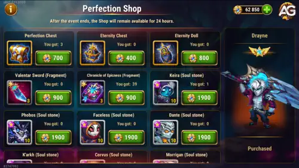

Path of Perfection is one of the most interesting Drayne events in Hero Wars because it mixes strong discounts with a shop full of long-term progression items.
During the event, you can find 55% discount offers on Outland chests, artifact-related deals, and x4 discounted emerald purchase offers. The real question, however, is what should you buy first in the Perfection Shop.

The Path of Perfection event shop stands out because it lets you convert event currency into items that are normally slow to farm or locked behind limited opportunities. That makes it much more important than just another temporary store.
If you spend your event coins well, you can improve rare heroes, secure hard-to-find artifacts, and push your account toward better end-game efficiency. If you spend them poorly, you usually end up with equipment pieces that could have been farmed through energy instead.
As a rule, give priority to heroes that are harder to buy in the normal daily shops. Those heroes are the most valuable long-term picks because the event gives you access to progress that is not easy to repeat later.
Once you secure the hero soul stones you really need, your next priority should usually be runes and artifacts. These resources become more and more valuable as your account approaches end-game progression.
Artifacts and skins are among the hardest upgrades to finish in late game. Because of that, event shops that offer artifact materials are usually much more efficient than they first appear, especially for players already working on core heroes.
Drayne's weapon artifact and book artifact are rare items and can be difficult to get consistently. If you are investing in Drayne, this event is a very good chance to grab them without waiting for future opportunities.
These artifact pieces have much higher long-term value than random equipment purchases. If Drayne is part of your plans, treat these artifacts as premium rewards.
For Drayne and Tempus soul stones, a strong practical target is to get them to at least four stars during the event. That gives you solid progress now while keeping your future costs more manageable.
After that, you can finish their evolution later with the Evolution Booster book if needed. This approach lets you save event currency for other rare resources instead of overspending on one hero all at once.
Avoid spending too much event currency on equipment items, even if the offers look tempting. Equipment is still much easier to farm with energy than rare heroes, runes, or artifacts.
When you spend energy in the campaign, you do not just get gear. You also gain gold, experience, and progress toward other missions and event objectives. That makes equipment one of the least efficient purchases in this shop for most players.
The best Path of Perfection shopping strategy is simple: prioritize rare heroes first, then move into runes and artifact investments, and only look at equipment if you already covered the important long-term options.
If you can, secure Drayne and Tempus progress up to at least four stars, pick up Drayne's weapon and book artifacts, and spend the rest on resources that are difficult to replace later. That gives you the best value from this event shop.
Did you like our Drayne Path of Perfection Shop Guide? Is there something you didn't understand or would like to suggest changes to? We invite you to join our comment section on the Alexandre Games Blog page. Feel free to express your opinion, clarify your doubts, and share your suggestions.
Click the button below to get started: